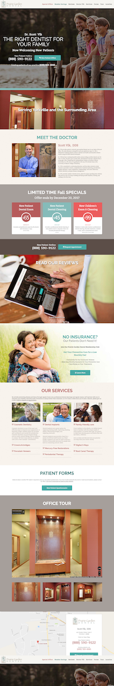
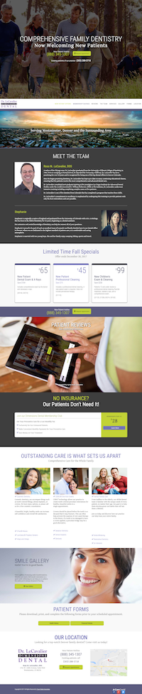
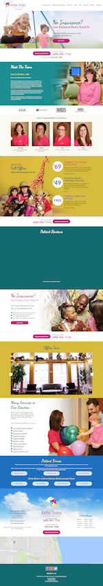

Tyson Steele
Developer
Tyson Steele does online marketing for hundreds of dentists across the US. As a developer on this project, I am responsible for turning markups into fully responsive websites, hosting the sites on a development server, assuring quality, and delivering the product on a tight schedule (one to two sites per week).
Accomplishments
- Delivered over 60 websites in the course of 15 months
- Created development tools to streamline production (see my Joe's Gulp Tools project)
- Automated deployment to Webfaction using Python
- Created a rigorous QA process to assure error free websites


